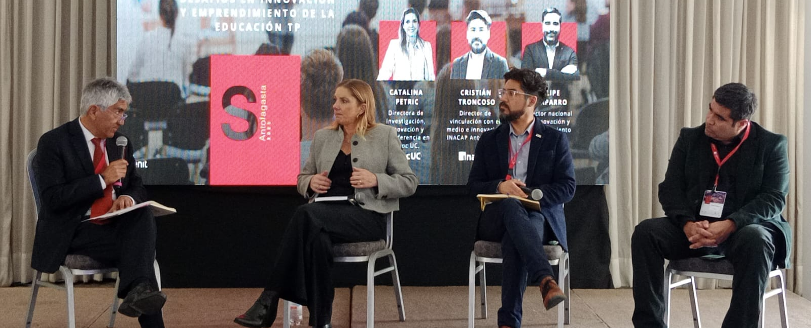
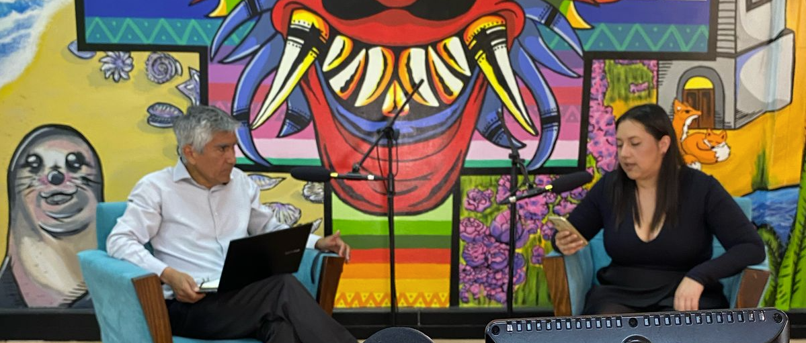

UA participa en seminario sobre emprendimientos científico-tecnológicos
Encuentro orientado a fortalecer el vínculo entre investigación, innovación y emprendimiento regional.
Leer nota

Nuevo vodcast de innovación impulsa desarrollos tecnológicos UA
Serie audiovisual que difunde resultados y prototipos surgidos desde la comunidad universitaria.
Leer nota
Visita técnica potencia la transferencia a la industria local
Articulación con el sector productivo para llevar capacidades científicas a aplicaciones reales.
Leer nota